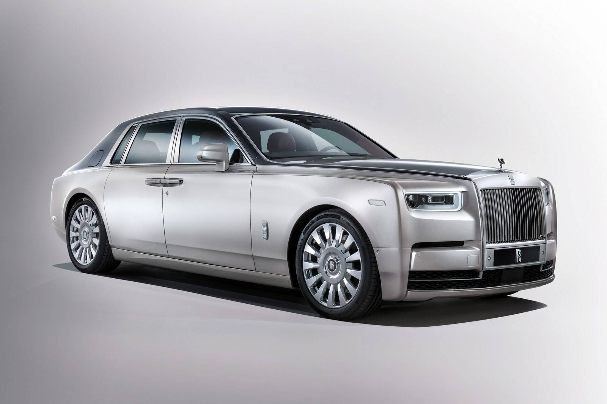

Rolls Royce

Rolls Royce - Phantom
Para quem não gosta de barulho, a fabricante investiu no isolamento acústico do carro, que é 10% mais silencioso a 100 km/h que a última versão. Com relação à parte mecânica, o novo Phantom possui um motor V12. O sedã consegue acelerar de 0 a 100 Km/h em 5,3 segundos, com velocidade máxima de 250 km/h.